Эмоциональное состояние агента
Как дать AI-персонажу характер, восприимчивость и эмоциональную память — вместо реакции только на последнюю реплику.
Понимание
Эмоциональное состояние — это история реакции
Эмоциональная метка описывает отдельную реплику. Состояние агента описывает продолжающуюся внутреннюю реакцию: что уже произошло с персонажем, что действует на него сейчас и с каким контекстом он встретит следующее событие.
1. Почему одной эмоциональной метки недостаточно
Обычный классификатор рассматривает фрагмент разговора отдельно и присваивает ему готовую метку: «страх», «радость», «гнев» или «печаль». После этого его работа заканчивается. Такая метка не объясняет, из каких данных получен вывод, что стало причиной реакции, как она изменялась и исчезли ли её последствия.
Для живого агента эмоция должна быть не подписью под последней репликой, а частью продолжающегося процесса. Новое событие воздействует на уже существующее current_state, а получившееся состояние становится контекстом следующего шага.
Как назвали эту реплику?
Классификатор выбирает один или несколько готовых классов и не сохраняет историю изменения персонажа.
Что происходит с агентом?
Каждое событие изменяет предыдущее состояние, а последствия влияют на следующие реакции.
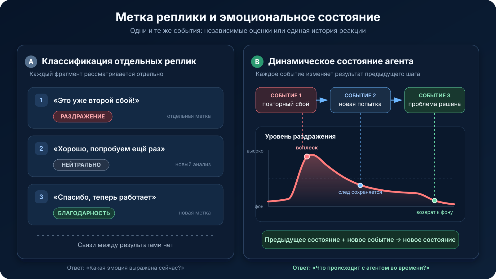
Как читать: классификатор оценивает каждый фрагмент отдельно. Рекуррентная модель связывает события: прошлое состояние переходит в следующий шаг и меняет будущую реакцию.
2. Прото-эмоции: что в действительности можно определить по голосу
Эмоция и её акустическое проявление — не одно и то же. Страх, радость, гнев, любовь или разочарование требуют понимания того, что произошло, к чему относится реакция и какой смысл имеют слова. В звуковой волне этих смысловых классов нет. В ней можно измерить только физические особенности речи и формы их изменения во времени.
Эти низкоуровневые формы реакции в модели называются прото-эмоциями. Это не сокращённый список настоящих эмоций и не «простые эмоции», из которых можно выбрать одну правильную метку. Это акустическая основа: внимание, доминирование или волнение, нервозность или спокойствие, тревожность, усиление или ослабление проявления, интерес или его потеря.
Поэтому акустический анализ должен останавливаться на тех признаках, которые действительно присутствуют в сигнале. В рамках этой модели используются только следующие измерения и их проверенные интерпретации:
| Измеряемый акустический признак | Интерпретация как прото-эмоции |
|---|---|
| Отклонение интенсивности или амплитуды от индивидуальной нормы | Привлечение внимания. Чем сильнее отклонение, тем сильнее сигнал внимания. |
| Понижение основного тона относительно нормы | Доминирование. |
| Повышение основного тона относительно нормы | Волнение; попытка сделать себя менее угрожающим или меньше по отношению к собеседнику. |
| Короткий период колебаний контура тона, приблизительно 0,2–0,4 секунды | Нервозность. |
| Более длинный и плавный период колебаний тона | Спокойствие, мелодичность. |
| Увеличение скорости речи | Тревожность и субъективная важность сообщения. |
| Восходящий наклон тона в пределах фразы | Усиление эмоционального проявления. |
| Нисходящий наклон тона | Ослабление эмоционального проявления. |
| Развитие интонационной волны к концу фразы | Интерес. |
| Затухание интонационной волны | Потеря интереса. |
Амплитуда колебаний тона показывает выраженность модуляции, ускорение — динамику изменения скорости, а паузы и длительности участвуют в расчёте темпа и ритма. Форманты и тембр помогают описать устройство звука, особенно при шёпоте, но в представленных исследованиях не образуют самостоятельной прото-эмоциональной метки. Крик и шёпот также являются составными акустическими режимами, а не эмоциями.
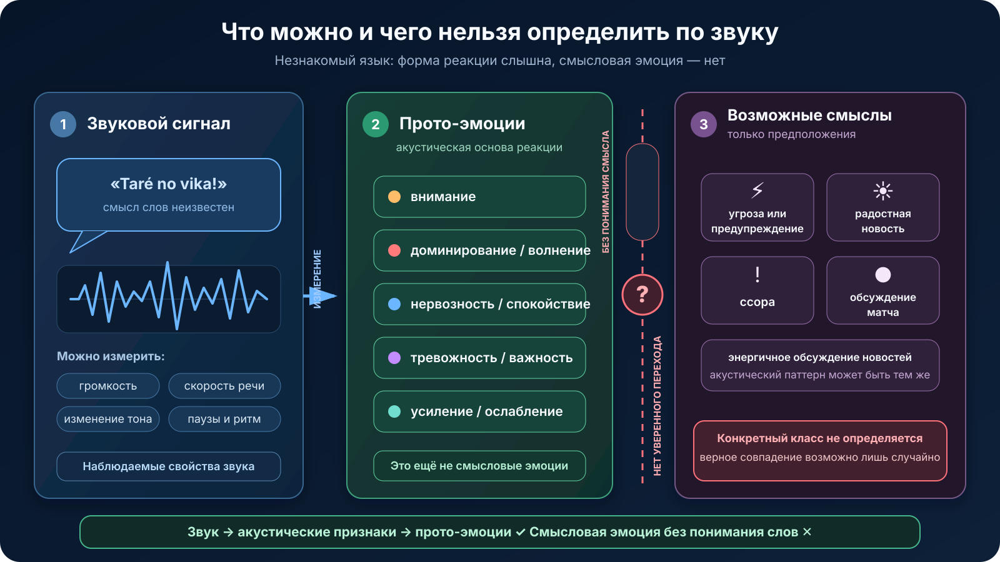
Как читать: интенсивность, скорость и изменения тона позволяют измерить прото-эмоциональную основу. Название эмоции требует смыслового анализа текста.
3. Почему из прото-эмоций нельзя получить готовую эмоцию
Связь между акустической основой и эмоциями устроена как «многие ко многим». Один и тот же паттерн участвует в выражении разных эмоций, а одна эмоция может проявляться акустически противоположными способами.
Шёпот может сопровождать страх, радость, признание в любви, доверительность или попытку не привлечь внимание. Крик может сопровождать страх, гнев, радость, спортивное ликование или предупреждение.
Страх может выражаться шёпотом, криком, ускоренной нервной речью, медленной подавленной речью или внешне спокойным голосом.
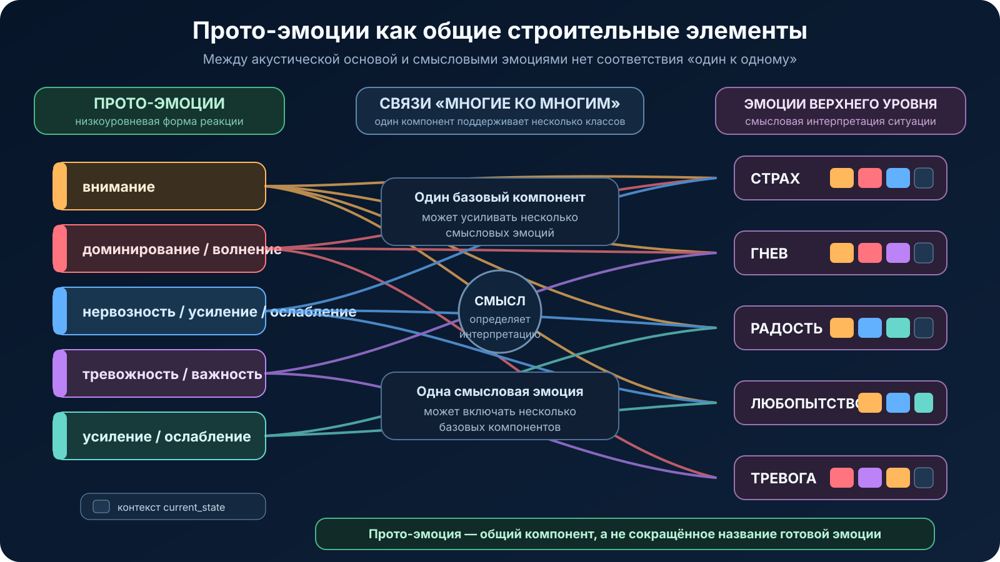
Как читать: акустические признаки не принадлежат одному классу. Их значение определяется не самим звуком, а эмоциональным контекстом, который уже сложился у агента.
Именно поэтому audio-only классификаторы, включая подходы вроде emotion2vec, не работают как распознаватели эмоций. Они пытаются получить из акустики смысловые категории, которых в ней нет. Модель может выучить актёрскую манеру чтения, особенности диктора, языка, микрофона, сценария записи или разметки конкретного корпуса, но эти корреляции не являются распознанной эмоцией.
Высокая метрика на таком бенчмарке не доказывает понимание страха, радости или гнева. Если набор данных позволяет угадывать метку по побочным акустическим закономерностям, это характеризует устройство набора данных, а не способность определить эмоцию человека. Нельзя установить, что именно распознано: состояние, постановочная подача, особенности корпуса или случайная корреляция.
4. Текст задаёт эмоцию, состояние агента — контекст для аудио
text_emotions формирует распределение эмоций верхнего уровня по смыслу текста. Акустический канал этого распределения не заменяет. Он сообщает, насколько выражены отдельные прото-эмоциональные признаки.
Роль контекста выполняет current_state, существующее у агента в момент поступления аудио. Если в нём уже развивается страх, ускорение речи, нервозность и усиление интонации могут увеличить страх. Если в другом состоянии уже развивается радость, похожий акустический паттерн может усилить радость. Сам звук не выбирает между ними и не создаёт эмоциональную причину.
Пронзительный крик в джунглях может усилить уже возникший страх перед неизвестной угрозой. Такой же по интенсивности крик на футбольном стадионе может усилить радость после гола. Различие находится не в самостоятельной акустической метке «страх» или «радость», а в состоянии и истории, с которыми агент встретил сигнал.
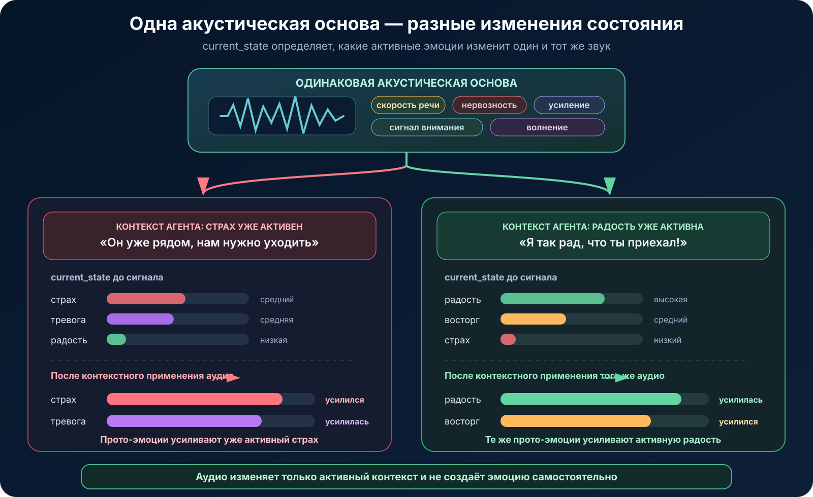
Как читать: текст формирует смысловые эмоциональные веса, а сохранённое current_state задаёт контекст. Прото-эмоции усиливают или ослабляют активные компоненты, но не создают новый эмоциональный класс.
| Доступные данные | Что можно получить | Граница |
|---|---|---|
| Только текст | text_emotions: смысловое распределение эмоций | Неизвестна фактическая акустическая форма речи |
| Только аудио | Акустические признаки и прото-эмоции | Нельзя определить эмоцию, её знак и причину |
| Аудио и текущее состояние | Усиление или ослабление уже активных эмоциональных компонентов | Аудио не создаёт отсутствующую смысловую эмоцию |
| Все входы модели | Новое собственное состояние агента | Это состояние агента, а не диагноз собеседника |
5. Эмоция собеседника не копируется в агента
Даже смысловая оценка текста не должна автоматически становиться состоянием персонажа. Раздражённый собеседник не обязан делать агента раздражённым. Входное событие проходит через характер, восприимчивость, ответ агента и уже накопленное состояние.
Замечает конфликтный смысл, но слабо отклоняется от равновесия и быстро восстанавливается.
На раздражение собеседника может ответить усилением заботы, а не раздражения.
Может преобразовать угрозу в страх и долго сохранять настороженность.
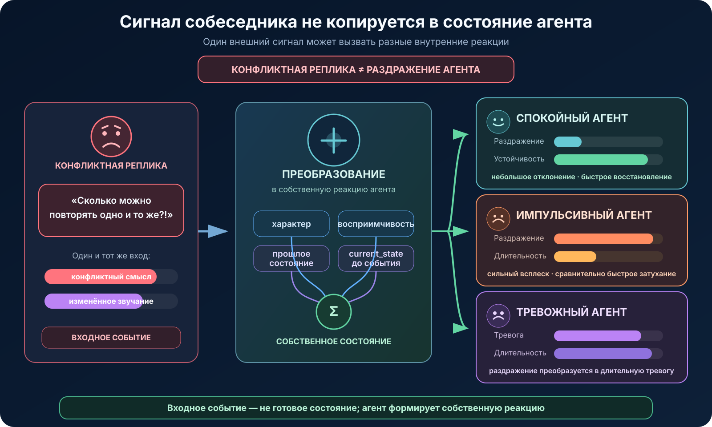
Как читать: один и тот же вход проходит через индивидуальные свойства и историю персонажа, поэтому разные агенты получают разные внутренние состояния.
6. Характер и память превращают события в траекторию
После конфликта состояние не исчезает вместе с последним словом. Следующая спокойная реплика может ослабить последствия, но не обязана мгновенно их обнулить. Результат предыдущего шага становится контекстом следующего: новое событие воздействует не на пустое место, а на уже сформированный current_state.
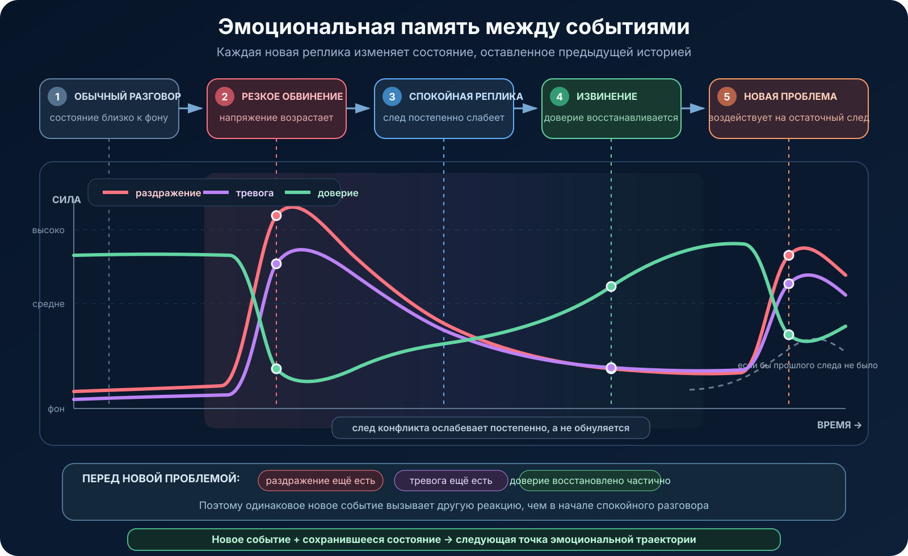
Как читать: обвинение создаёт отклонение, спокойный ответ и извинение постепенно его ослабляют, но каждое новое событие действует на сохранённое состояние.
Характер задаёт естественный фон, восприимчивость и скорость восстановления. Его структура и эмоциональные веса подробнее раскрыты в статье «Коммуникационные стили в агентских системах». Здесь характер используется как устойчивая основа реакции.
Поэтому одно резкое обвинение создаёт разные траектории. Спокойный персонаж отклонится слабо и быстро восстановится. Импульсивный переживёт сильный, но короткий всплеск. Тревожный дольше сохранит ожидание угрозы.
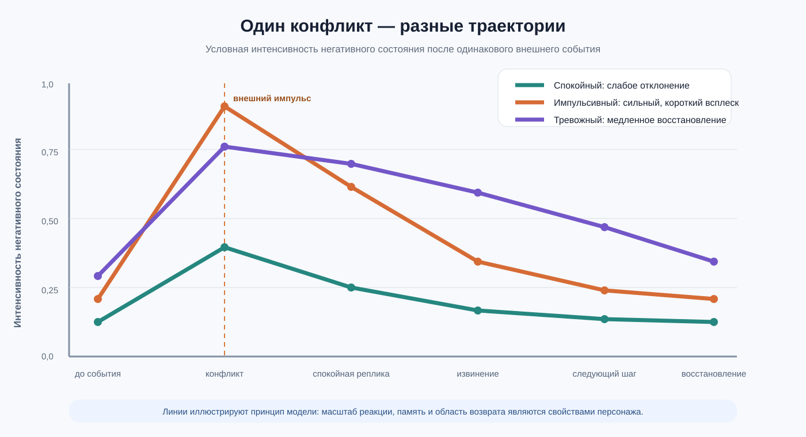
Сила реакции, её форма и скорость восстановления зависят от характера и состояния, накопленного до события.
7. Что представляет собой модель в целом
| Обычный анализ эмоций | Модель эмоционального состояния агента |
|---|---|
| Пытается получить готовую эмоцию непосредственно из звука | Извлекает из звука только измеримые признаки и прото-эмоции |
| Принимает метки датасета за распознанное состояние человека | Отделяет акустические корреляции от эмоций верхнего уровня |
| Назначает положительный или отрицательный класс по голосу | Не приписывает акустике валентность или смысловую эмоцию |
| Рассматривает каждую реплику отдельно | Сохраняет current_state между событиями |
| Добавляет аудиометку как самостоятельную эмоцию | Применяет прото-эмоции только через существующий эмоциональный контекст |
| Формирует отчёт о разговоре | Использует состояние для следующей реакции продукта |
text_emotionsАудио → акустические признаки → прото-эмоции
Предыдущее
current_state → контекст применения прото-эмоцийХарактер + ответ агента + память → новое
current_state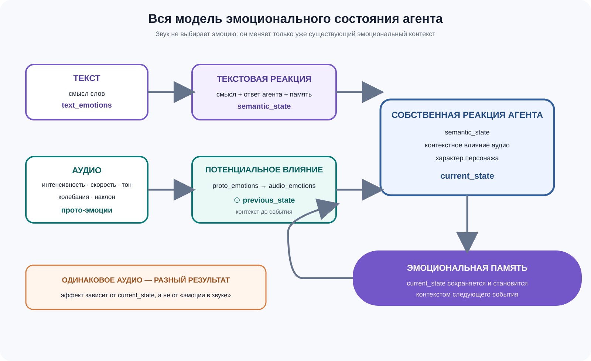
Как читать: текст формирует эмоции смыслового уровня. Аудио формирует только прото-эмоции, которые модифицируют активный контекст. Характер, ответ и память превращают входное событие в собственное состояние агента.
text_emotions, предыдущее состояние — контекст, а характер и память формируют продолжающуюся эмоциональную траекторию агента.Какие продуктовые возможности дают непрерывность состояния, разные характеры и корректное использование акустики.
Как вычислять признаки, контекстно применять прото-эмоции, обновлять состояние и контролировать устойчивость.
Бизнес
Что получает продукт
Не отчёт с эмоциональными метками после разговора, а управляемую траекторию: система видит накопление и восстановление реакции, персонаж помнит последствия, а следующая стратегия учитывает его текущее состояние.
Отчёт описывает разговор после завершения. Адаптивный продукт отслеживает состояние во время взаимодействия, меняет действие и проверяет, помогло ли оно.
1. От отчёта об эмоциях — к управлению взаимодействием
Обычная аналитика чаще отвечает после завершения разговора: какие эмоциональные метки встречались в его фрагментах. Рекуррентное состояние используется во время взаимодействия. Оно показывает направление изменений: реакция усиливается, сохраняется или действительно ослабевает после действия системы.
Продукт при этом не заявляет, что достоверно прочитал психику человека. Он хранит состояние собственного агента, сформированное смыслом текста, характером, предыдущими событиями и доступными акустическими признаками.
| Обычная аналитика | Рекуррентное состояние | Продуктовый эффект |
|---|---|---|
| Каждый фрагмент оценивается отдельно | Новое событие продолжает предыдущую траекторию | Персонаж ведёт себя последовательно |
| Результат — отчёт после события | Состояние доступно во время взаимодействия | Стратегию можно изменить до завершения диалога |
| Одинаковая реплика даёт одинаковую реакцию | Характер и история меняют восприимчивость | Появляются действительно разные роли |
2. Use case 1. Поддержка и колл-центр
Задача. Не завершать обращение только потому, что последняя фраза клиента стала формально нейтральной. Агент должен учитывать всю траекторию разговора и проверить, действительно ли последствия конфликта ослабевают.
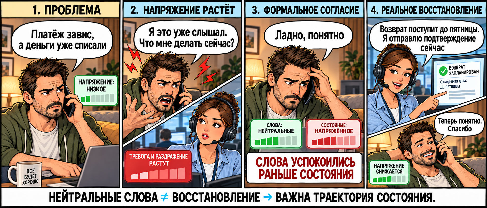
Нейтральные слова могут появиться раньше восстановления. Продукт продолжает сопровождение, если состояние агента ещё хранит последствия конфликта, а скорость, интенсивность и колебания тона не возвращаются к обычному уровню.
| Этап | Что учитывает система | Продуктовое действие |
|---|---|---|
| Клиент описывает проблему | Текст задаёт смысл события; акустика показывает скорость, интенсивность и изменение тона | Зафиксировать начальную точку траектории |
| Несколько неудачных объяснений | В состоянии агента накапливаются последствия повторных конфликтных событий | Сменить сценарий, темп или подключить оператора |
| Решение предложено | Слова стали нейтральными, но накопленное состояние ещё не восстановилось | Не завершать обращение преждевременно |
| Клиент понял решение | Последующие события устойчиво ослабляют прежнее состояние | Зафиксировать фактическую деэскалацию |
Метрики: время до деэскалации, максимальное отклонение состояния, остаточное состояние при завершении, доля эскалаций человеку и повторных обращений.
3. Use case 2. Обучающий агент
Задача. Различать случайную ошибку и накопившуюся фрустрацию. Последний неверный ответ сам по себе не показывает, что ученик несколько шагов подряд теряет уверенность.
Агент не упрощает задание после каждого промаха. Он замечает устойчивое накопление состояния, связанного с фрустрацией, вовремя помогает и проверяет, привела ли помощь к восстановлению.
Небольшое отклонение не требует немедленного упрощения.
Последствия накапливаются, возрастает риск отказа от задания.
Система проверяет, изменили ли следующие события состояние в сторону восстановления.
После успешного решения радость и уверенность также не обязаны исчезать мгновенно: тьютор может закрепить успех и только затем повысить сложность.
Продуктовый эффект: адаптация к траектории ученика вместо механической реакции на один ответ. Метрики: восстановление после ошибки, число шагов до отказа, эффект подсказки и удержание в задании.
4. Use case 3. Игровой NPC
Задача. Сделать последствия угроз, помощи и примирения частью сцены. Без состояния NPC после каждого события фактически начинает отношения заново.
Помощь после угрозы уменьшает последствия конфликта, но не стирает прошлое мгновенно. Следующая реакция NPC продолжает уже сложившуюся историю.
| Событие | Изменение состояния NPC | Наблюдаемое поведение |
|---|---|---|
| Игрок угрожает | Растут страх, раздражение или настороженность — в зависимости от характера и истории NPC | NPC увеличивает дистанцию и меньше доверяет |
| Игрок помогает | След предыдущего события уменьшается постепенно | Появляется осторожное сотрудничество |
| Угроза повторяется | Новое событие действует на сохранённое состояние | Реакция сильнее или восстановление медленнее |
| Происходит примирение | Состояние возвращается к характерному фону | Отношение меняется убедительно, а не переключателем |
Продуктовый эффект: один набор событий создаёт разные траектории у стоика, тревожного и вспыльчивого NPC без ручного написания каждой комбинации.
5. Use case 4. Companion и виртуальный помощник
Задача. Сохранить ощущение продолжающегося собеседника, но не смешивать текущее настроение разговора с долговременным отношением.
Оперативное состояние меняется внутри диалога и постепенно затухает. Только значимые события отдельно влияют на долговременное отношение, поэтому случайная реакция не становится постоянной характеристикой пользователя.
След последних реплик: напряжение, радость, раздражение или восстановление. Оно быстро изменяется и постепенно затухает.
Доверие и значимые события между встречами. Это отдельный слой с собственной политикой записи и забывания.
Продуктовый эффект: персонаж сохраняет настроение внутри разговора и узнаваемое отношение между разговорами, не перенося краткую реакцию навсегда.
6. Use case 5. Тренажёр переговоров
Задача. Проверять одну стратегию на разных типах собеседников, а не проходить единственный заранее написанный сценарий.
Одинаковое давление по-разному действует на стоика, импульсивного и тревожного собеседника. Тренажёр проверяет навык адаптации, а не запоминание одной ветки диалога.
| Профиль | Динамика после давления | Какой навык проверяется |
|---|---|---|
| Стоик | Слабо отклоняется и сохраняет позицию | Аргументация без опоры на эмоциональное давление |
| Импульсивный | Быстро вспыхивает, но способен быстро восстановиться | Деэскалация непосредственно в момент пика |
| Тревожный | Долго сохраняет ожидание угрозы | Последовательное восстановление безопасности и доверия |
Одинаковая реплика обучаемого запускает разные траектории, но профили остаются воспроизводимыми. Это позволяет сравнивать стратегии, а не случайные сценарные ветки.
Метрики: достигнутый пик, время восстановления, количество повторных эскалаций и устойчивость результатов при повторном прохождении.
7. Use case 6. Социальный робот и мультимодальный интерфейс
Задача. Учитывать расхождение между словами и звучанием. Нейтральная фраза может сопровождаться ускоренной речью, короткими колебаниями тона или сильным отклонением интенсивности, но эти признаки сами по себе не сообщают, какую эмоцию испытывает человек.
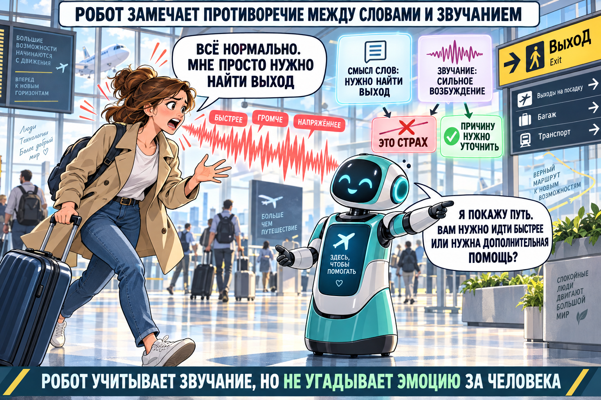
Робот учитывает расхождение каналов и выбирает более осторожную реакцию, но не превращает скорость, интенсивность или изменение тона в эмоциональный диагноз.
Формирует text_emotions на смысловом уровне.
Описывают внимание, доминирование или волнение, нервозность, спокойствие, тревожность, усиление и интерес.
Определяет, какие уже активные компоненты могут быть усилены или ослаблены акустикой.
Продуктовый эффект: робот не игнорирует звучание и одновременно не выдаёт акустический паттерн за достоверно определённую эмоцию человека.
8. Как настраивать продукт
Бизнес настраивает наблюдаемое поведение роли, а не пытается вручную назначать эмоцию каждому звуку.
| Уровень | Что настраивается | Пример решения |
|---|---|---|
| Роль | Характер и естественный эмоциональный фон | Спокойный помощник или тревожный NPC |
| Динамика | Восприимчивость, память, вариативность и восстановление | Долго помнить страх, но быстро терять раздражение |
| Сценарий | Допустимые реакции и правила эскалации | Поддержка замечает конфликтный смысл, но не копирует раздражение клиента |
| Эксплуатация | Границы состояния, время жизни и изоляция диалогов | Новый клиент не наследует состояние предыдущего |
9. Что измерять в продукте
| Метрика | Проверяемый вопрос | Где особенно важна |
|---|---|---|
| Непрерывность | Сохраняются ли последствия между шагами? | NPC, companion |
| Время восстановления | Как быстро состояние возвращается к фону? | Поддержка, переговоры |
| Деэскалация | Изменилось ли состояние агента после выбранного действия? | Колл-центр, обучение |
| Различимость персонажей | Дают ли профили разные траектории на одном сценарии? | Игры, тренажёры |
| Управляемость | Предсказуемо ли меняется динамика при настройке? | Все сценарии |
| Изоляция и границы | Нет ли переноса между пользователями и неконтролируемого накопления? | Все продукты |
10. Три уровня внедрения
Начать можно с аналитики траектории, затем подключить адаптацию диалога и только после этого перейти к полноценной роли с характером, состоянием и памятью.
Аналитика траектории
Состояние рассчитывается для наблюдения и метрик, но пока не меняет поведение.
Адаптация диалога
Состояние выбирает следующую стратегию в заранее заданных безопасных границах.
Персонаж и память
Характер, оперативное состояние и отдельная долговременная память формируют устойчивую роль.
text_emotions и прото-эмоции, применять акустическое влияние только через состояние, существовавшее в момент сигнала, хранить состояние по диалогу и контролировать затухание.Инженерия
От входных сигналов к сохраняемому состоянию
Инженерная задача состоит не в выборе одной метки эмоции, а в согласованном обновлении N-мерного состояния. Семантический слой сначала формирует промежуточную реакцию, затем акустический сигнал и характер преобразуют её в итоговый вектор.
1. Пространство состояния и именованные сущности
Все компоненты системы используют единый упорядоченный набор эмоций EMOTION_SPACE. Для каждой эмоции хранится отдельная интенсивность, поэтому состояние является полным многомерным вектором:
current_state ∈ ℝ|EMOTION_SPACE|Количество эмоций выбирается при проектировании системы. Важно не конкретное число, а единая семантика координат: одна и та же позиция во всех векторах верхнего уровня должна обозначать одну и ту же эмоцию.
| Имя | Определение |
|---|---|
EMOTION_SPACE | Единый набор эмоциональных координат верхнего уровня. |
text_emotions | Эмоциональный вектор, распознанный в тексте собеседника. |
PROTO_EMOTION_SPACE | Набор подтверждённых низкоуровневых акустических характеристик: внимание; доминирование или волнение; нервозность или спокойствие; тревожность и важность; усиление или ослабление; интерес или потеря интереса. |
proto_emotions | Результат интерпретации измеримых акустических признаков в пространстве прото-эмоций. Это не классификация эмоций верхнего уровня. |
proto_to_emotion_weights | Конфигурация «многие ко многим», распределяющая потенциальное усиливающее или ослабляющее действие прото-эмоций по координатам EMOTION_SPACE. |
audio_emotions | Потенциальное распределение акустического влияния после проекции proto_emotions. Это не распознанная эмоция и ещё не фактический вклад в состояние. |
response_emotions | Эмоциональный смысл уже сформированного ответа агента. |
character_baseline | Базовый профиль эмоциональных склонностей персонажа. |
previous_state | Сохранённый current_state, существовавший непосредственно перед текущим событием. Для акустического канала это контекст, в котором возник звук. |
semantic_state | Промежуточное состояние после текстового слоя. |
current_state | Итоговое состояние текущего шага. |
Контракт акустического канала
Акустический анализатор не должен классифицировать весь EMOTION_SPACE. Он измеряет физические параметры речи и переводит их только в подтверждённые прото-эмоции.
| Акустическое измерение | Прото-эмоциональная интерпретация |
|---|---|
| Отклонение интенсивности или амплитуды от индивидуальной нормы | Привлечение внимания; сила отклонения определяет силу сигнала. |
| Основной тон ниже индивидуальной нормы | Доминирование. |
| Основной тон выше индивидуальной нормы | Волнение; попытка сделать себя менее угрожающим или меньше. |
| Короткий период колебаний контура тона, приблизительно 0,2–0,4 секунды | Нервозность. |
| Более длинные и плавные колебания тона | Спокойствие, мелодичность. |
| Увеличение скорости речи | Тревожность и субъективная важность сообщения. |
| Восходящий или нисходящий наклон тона | Усиление или ослабление эмоционального проявления. |
| Развитие или затухание интонационной волны | Интерес или потеря интереса. |
В PROTO_EMOTION_SPACE нет положительной и отрицательной окраски, удивления, радости, страха, гнева или грусти. Амплитуда модуляции, ускорение, паузы, длительности, форманты и тембр могут участвовать в вычислении признаков, но не получают самостоятельную смысловую эмоцию, если такая интерпретация не определена представленными исследованиями.
proto_emotions описывает то, что найдено в звуке. text_emotions описывает эмоциональный смысл текста. audio_emotions задаёт лишь потенциальное распределение акустического влияния, которое ещё должно быть ограничено текущим контекстом агента.Проекция «многие ко многим»
Одна прото-эмоция может быть совместима со множеством эмоций верхнего уровня, а одна эмоция может иметь акустически противоположные проявления. Поэтому проекция не выбирает окончательную метку:
audio_emotions[emotion] = сумма по всем proto (proto_emotions[proto] × proto_to_emotion_weights[proto, emotion])proto_to_emotion_weights является конфигурацией модели, а не таблицей акустически распознаваемых эмоций. Её результат нельзя читать как вероятность того, что собеседник испытывает конкретную эмоцию.
Контекстное применение аудио
Фактический аудиовклад определяется только после покоординатного сопоставления потенциального влияния с состоянием, существовавшим в момент сигнала:
audio_contributiont = state_gain × audio_weight × (audio_emotionst ⊙ previous_statet−1)Если координата отсутствует в previous_state, аудио не может создать её самостоятельно. Оно только усиливает или ослабляет уже активный эмоциональный контекст.
| Одинаковое потенциальное влияние | Контекст до события | Контекстный аудиовектор |
|---|---|---|
audio_emotions = [0,8; 0,8; 0,8] | [0,8; 0,05; 0,05] | [0,64; 0,04; 0,04] |
[0,05; 0,05; 0,8] | [0,04; 0,04; 0,64] |
Это иллюстрация механизма, а не эмпирическая таблица прото-эмоций. Одинаковая акустическая основа даёт разный фактический вклад, потому что контекст агента различен.
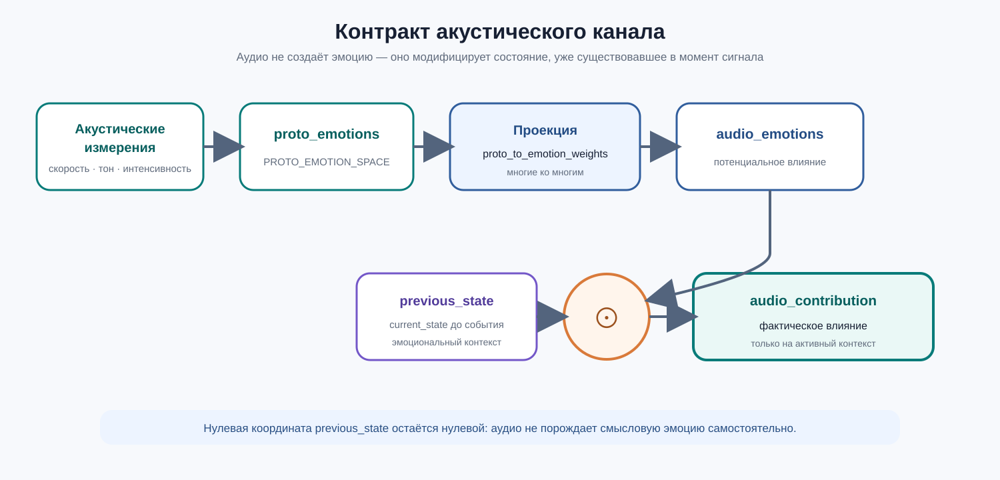
Анализатор формирует прото-эмоции, проекция — потенциальный audio_emotions, а previous_state определяет фактический audio_contribution.
audio_emotions, ни максимальный аудиовклад нельзя объявлять эмоцией собеседника. Эти величины служат только для обновления состояния агента.character_baseline используется как готовый входной вектор.Диапазон и смысл координат
Рекомендуемый контракт входов — независимые активации в диапазоне от 0 до 1:
vectori ≤ 1Сумма координат не обязана равняться единице: несколько эмоций могут быть активны одновременно. Все анализаторы должны быть откалиброваны в сопоставимом масштабе.
Операции над векторами
| Запись | Смысл |
|---|---|
scalar × vector | Каждая координата вектора умножается на одно число. |
vector₁ ⊙ vector₂ | Покоординатное умножение векторов одинаковой размерности. Именно оно ограничивает аудиовлияние текущим контекстом. |
vector₁ + vector₂ | Покоординатное сложение. Скалярное произведение не используется. |
Что означает шаг t
Индекс t обозначает событие обновления. До начала расчёта система фиксирует previous_statet−1 — состояние, существовавшее в момент поступления сигнала. Выбранная гранулярность должна быть единой для вычисления, хранения и тестирования.
2. Базовая операция смешения
Для каждой эмоции i сначала независимо выбирается случайный множитель:
random_factori ∼ U(1 − variability_range, 1 + variability_range)Затем значение этой эмоциональной координаты вычисляется как взвешенная сумма трёх источников:
emotion_valuei = layer_gain × [external_weight × external_emotionsi + random_factori × modulated_emotionsi + previous_weight × previous_emotionsi]random_factor создаётся отдельно для каждой эмоции. Поэтому вариативность слегка меняет форму всего профиля, а не умножает весь вектор на одно случайное число.
| Параметр | Инженерный смысл |
|---|---|
external_weight | Восприимчивость слоя к внешнему сигналу: смыслу слов или акустике. |
variability_range | Допустимый диапазон случайного отклонения второго входа слоя. |
previous_weight | Сила переноса предыдущего состояния в текущий расчёт. |
layer_gain | Общий масштаб результата слоя; также влияет на рекуррентную динамику. |
3. Два последовательных слоя
Слой 1: текстовая динамика
semantic_statet = semantic_gain × [text_weight × text_emotionst + response_random_factort ⊙ response_emotionst + previous_state_weight × previous_statet−1]Первый слой объединяет эмоциональный смысл текста собеседника, эмоциональный смысл собственного ответа и состояние агента, существовавшее до текущего события.
Слой 2: контекстная акустика и характер
current_statet = state_gain × [audio_weight × (audio_emotionst ⊙ previous_statet−1) + character_random_factort ⊙ character_baseline + semantic_state_weight × semantic_statet]Второй слой использует не самостоятельную «эмоцию из аудио», а потенциальный audio_emotions, покоординатно ограниченный сохранённым состоянием. Поэтому акустика может изменить силу уже активных эмоций, но не создаёт новую смысловую координату при нулевом контексте.
| Параметр слоя | Что регулирует |
|---|---|
text_weight | Влияние эмоционального содержания текста собеседника. |
response_variability_range | Диапазон случайного изменения вклада response_emotions. |
previous_state_weight | Перенос эмоциональной памяти в текстовый слой. |
semantic_gain | Общий масштаб результата первого слоя. |
audio_weight | Сила контекстной акустической модификации. |
character_variability_range | Диапазон случайного изменения проявления характера. |
semantic_state_weight | Перенос результата первого слоя в итоговое состояние. |
state_gain | Общий масштаб итогового слоя. |
response_random_factort,i ∼ U(1 − response_variability_range, 1 + response_variability_range)character_random_factort,i ∼ U(1 − character_variability_range, 1 + character_variability_range)Новый множитель генерируется на каждом шаге t, для каждой эмоции i и отдельно для каждого слоя. По умолчанию выборки независимы.
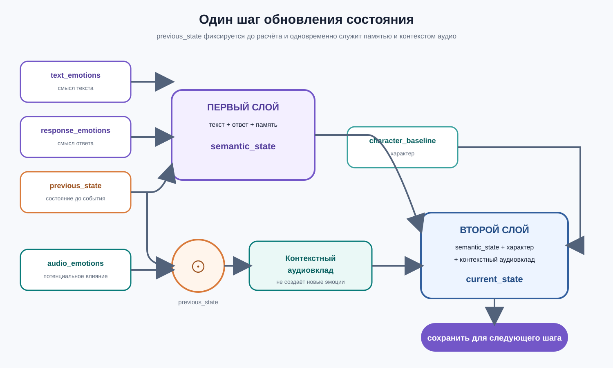
Как читать: text_emotions, ответ и память формируют semantic_state. Во втором слое потенциальное аудиовлияние умножается на состояние до события и объединяется с характером и semantic_state.
4. Сквозной числовой пример
Рассмотрим один шаг для пространства из трёх эмоций:
EMOTION_SPACE = [joy, anger, fear]| Вектор | joy | anger | fear |
|---|---|---|---|
text_emotions | 0,10 | 0,80 | 0,20 |
response_emotions | 0,20 | 0,40 | 0,10 |
previous_state | 0,40 | 0,30 | 0,20 |
audio_emotions, потенциальное влияние | 0,05 | 0,90 | 0,30 |
audio_emotions ⊙ previous_state | 0,02 | 0,27 | 0,06 |
character_baseline | 0,50 | 0,15 | 0,35 |
Числа audio_emotions здесь нужны только для проверки вычисления и не являются эмпирическими оценками эмоций по звуку.
Первый слой
Зададим text_weight = 0,5, previous_state_weight = 0,6, semantic_gain = 0,8 и зафиксируем случайные множители:
response_random_factor = [1,05; 0,95; 1,00]semantic_statejoy = 0,8 × (0,5 × 0,10 + 1,05 × 0,20 + 0,6 × 0,40) = 0,400semantic_stateanger = 0,8 × (0,5 × 0,80 + 0,95 × 0,40 + 0,6 × 0,30) = 0,768semantic_statefear = 0,8 × (0,5 × 0,20 + 1,00 × 0,10 + 0,6 × 0,20) = 0,256semantic_state = [0,400; 0,768; 0,256]Второй слой
Зададим audio_weight = 0,4, semantic_state_weight = 0,7, state_gain = 0,9 и зафиксируем:
character_random_factor = [1,00; 1,10; 0,90]current_statejoy = 0,9 × (0,4 × 0,02 + 1,00 × 0,50 + 0,7 × 0,400) = 0,709current_stateanger = 0,9 × (0,4 × 0,27 + 1,10 × 0,15 + 0,7 × 0,768) = 0,730current_statefear = 0,9 × (0,4 × 0,06 + 0,90 × 0,35 + 0,7 × 0,256) = 0,466current_state = [0,709; 0,730; 0,466]previous_state. Аудио усиливает активный контекст и не может самостоятельно породить отсутствующую эмоцию.5. Вклад каждого источника
После раскрытия двух слоёв итог читается как сумма пяти компонентов. Главное отличие — аудиовклад зависит от состояния до события:
current_statet = audio_contributiont + character_contributiont + text_contributiont + response_contributiont + memory_contributiont| Вклад | Полная формула | Смысл |
|---|---|---|
audio_contributiont | state_gain × audio_weight × (audio_emotionst ⊙ previous_statet−1) | Акустика модифицирует эмоциональный контекст, уже существовавший у агента. |
character_contributiont | state_gain × character_random_factort ⊙ character_baseline | Характер входит непосредственно в итоговый слой. |
text_contributiont | state_gain × semantic_state_weight × semantic_gain × text_weight × text_emotionst | Эмоциональный смысл текста проходит через оба слоя. |
response_contributiont | state_gain × semantic_state_weight × semantic_gain × response_random_factort ⊙ response_emotionst | Эмоциональный смысл ответа проходит через оба слоя. |
memory_contributiont | state_gain × semantic_state_weight × semantic_gain × previous_state_weight × previous_statet−1 | Память переносит прошлое состояние через первый и второй слои. |
previous_state участвует двумя различными путями: линейно сохраняет эмоциональную память и покоординатно задаёт контекст для акустической модификации. Эти роли нельзя объединять в один коэффициент.
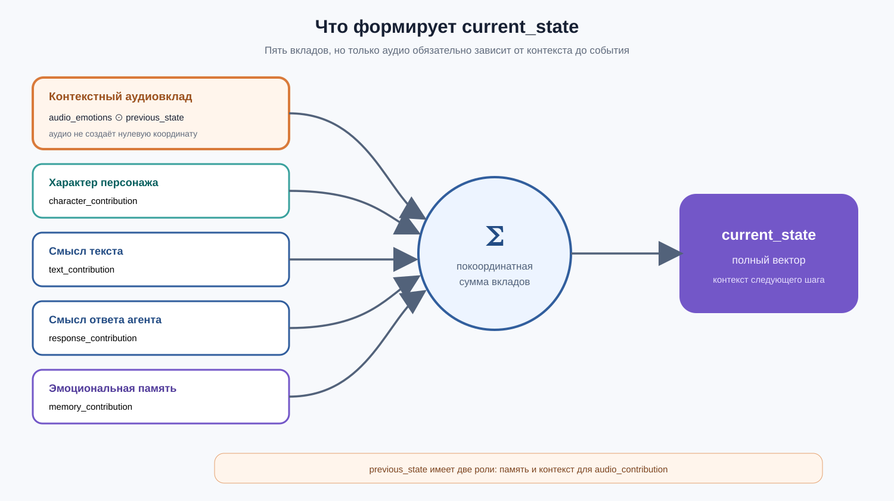
current_stateТекст, ответ и память проходят через первый слой. Аудио сначала ограничивается previous_state; только полученный контекстный вклад поступает во второй слой.
6. Порядок вычислений
response_emotions. В однопроходном режиме ответ сначала формируется, затем его смысл обновляет состояние для следующего шага. Он не может изменить уже созданный ответ. Влияние нового состояния на ту же реплику требует отдельной двухпроходной генерации.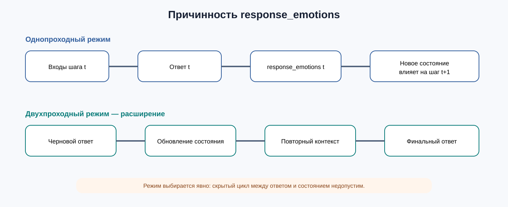
Режим выбирается явно, чтобы избежать скрытого цикла «ответ зависит от состояния, состояние зависит от ответа».
Прочитать сохранённый current_state и использовать его как previous_state всего текущего обновления.
Распознать text_emotions. Из аудио извлечь измерения, затем proto_emotions и потенциальный audio_emotions.
Получить ответ агента и определить response_emotions.
Объединить text_emotions, response_emotions и previous_state в semantic_state.
Вычислить audio_emotions ⊙ previous_state и передать результат во второй слой вместе с характером и semantic_state.
Применить constrain, сохранить новый current_state и передать его потребителям.
current_state. Преобразование состояния в текст, голос, мимику или действие относится к самостоятельным подсистемам.7. Контракт базовой функции
EMOTION_SPACEЕдиный упорядоченный набор из N эмоциональных координат.external_emotionsПолный N-мерный внешний вектор слоя. В первом слое это text_emotions; во втором — заранее вычисленный audio_emotions ⊙ previous_state.modulated_emotionsВектор с покоординатной вариативностью: response_emotions в первом слое или character_baseline во втором.previous_emotionsprevious_state для первого слоя или semantic_state для второго.rngГенератор случайных множителей; при тестировании его начальное состояние фиксируется.constrainФункция, определяющая допустимую область итоговых активаций.Перед вычислением проверяются два разных пространства:
proto_emotions) = PROTO_EMOTION_SPACEtext_emotions) = coordinates(audio_emotions) = coordinates(response_emotions) = coordinates(character_baseline) = coordinates(previous_state) = EMOTION_SPACEАдаптер акустического канала переводит PROTO_EMOTION_SPACE в потенциальный audio_emotions. Базовая операция смешения получает во втором слое уже контекстно ограниченный вектор audio_emotions ⊙ previous_state.
Вход и выход одного обновления
| Часть контракта | Содержимое |
|---|---|
| Входные данные | text_emotions, proto_emotions или подготовленный audio_emotions, response_emotions, character_baseline и снимок previous_state. |
| Параметры | Два независимых набора весов, проекция proto_to_emotion_weights и политика ограничения. |
| Служебные данные | Номер или время шага, маски доступности каналов и источник случайности. |
| Результат | current_state в пространстве EMOTION_SPACE после применения constrain. |
| Сохраняемые данные | Состояние, идентификаторы агента и диалога, шаг, время, версия параметров и состояние генератора случайности. |
8. Алгоритм одного обновления
- Зафиксировать сохранённый
current_stateкак неизменяемыйprevious_stateтекущего шага. - Привести
text_emotions,response_emotions,character_baselineиprevious_stateкEMOTION_SPACE. - Для аудио измерить физические признаки, вычислить
proto_emotionsвPROTO_EMOTION_SPACEи получить потенциальныйaudio_emotionsчерезproto_to_emotion_weights. - Вычислить контекстный акустический вектор
audio_emotions ⊙ previous_state. Не заменятьprevious_stateуже обновлённым состоянием того же шага. - Сформировать
response_random_factorи вычислитьsemantic_state. - Сформировать
character_random_factorи вычислитьcurrent_state, используя контекстный акустический вектор. - Применить
constrainи сохранить результат как состояние следующего шага.
text_emotions, характер, ответ и память продолжают участвовать в расчёте.Ядро и расширения
Единое пространство эмоций, два слоя, контекстное акустическое влияние, характер, предыдущее состояние и покоординатная вариативность.
constrain, маски доступности, затухание по физическому времени, параметры отдельных эмоций, воспроизводимая случайность и долговременное хранение.
Расширения не меняют смысл ядра, но делают реализацию устойчивой к пропущенным данным, длительным паузам и эксплуатационным ограничениям.
9. Устойчивость, затухание и стационарная область
Если временно убрать внешние входы и базовые добавки, доля прошлого состояния, переживающая полный проход через оба слоя, равна:
memory_retention = semantic_gain × previous_state_weight × state_gain × semantic_state_weightВ скалярном случае память затухает, если:
memory_retention| < 1Если веса задаются отдельно для каждой эмоции, условие проверяется покоординатно:
memory_retentioni| < 1 для каждой эмоции iПри memory_retention = 0.8 след уменьшается медленно: 1 → 0,8 → 0,64 → 0,51. При значении 0,3 он почти исчезает за несколько шагов. При абсолютном значении не меньше 1 рекуррентная часть не затухает и может усиливаться.
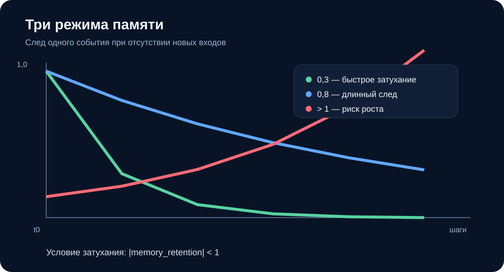
memory_retention = 0.3 быстро стирает след, 0.8 сохраняет его дольше, а значение выше единицы создаёт риск роста.
constant_input. Тогда обновление читается как current_state = constant_input + memory_retention * previous_state.stable_state = constant_input / (1 − memory_retention)Формула стационарного состояния применяется покоординатно при постоянных входах и параметрах. При случайной вариативности она описывает ожидаемое среднее, а при активном нелинейном constrain стационарная точка может измениться.
Эту стационарную область можно интерпретировать как эмоциональный аттрактор персонажа. Это следствие постоянного воздействия character_baseline и устойчивой рекурсии, а не отдельная сущность.
10. Что означают числа в current_state
Исходная формула не гарантирует, что координаты останутся вероятностями. Они могут превысить 1, а при некоторых параметрах — выйти за допустимый диапазон. Нужно заранее определить семантику состояния.
Хранить неотрицательные независимые значения и нормализовать только для конкретного потребителя.
Применить softmax или нормировку суммы. Координаты начнут конкурировать: усиление одной уменьшит остальные.
Применить sigmoid или clipping в [0,1], сохранив возможность одновременно активировать несколько эмоций.
variability_range также должен иметь допустимый диапазон. При значении от 0 до 1 random_factor остаётся неотрицательным. Если диапазон больше 1, вклад отдельной эмоции может случайно изменить знак.
11. Параметры слоя и параметры отдельных эмоций
В базовой модели один набор параметров применяется ко всему слою. Более выразительное расширение задаёт отдельную настройку для каждой эмоции:
emotion_valuei = layer_gaini × [external_weighti × external_emotionsi + random_factori × modulated_emotionsi + previous_weighti × previous_emotionsi]| Эмоция | external_weight | variability_range | previous_weight | layer_gain | Интерпретация |
|---|---|---|---|---|---|
| Joy | 0,4 | 0,1 | 0,7 | 1,0 | Умеренно воспринимает радость и довольно долго её сохраняет. |
| Anger | 0,8 | 0,2 | 0,4 | 1,0 | Реагирует на агрессию, но сравнительно быстро восстанавливается. |
| Fear | 0,7 | 0,2 | 0,9 | 1,0 | Тревожные сигналы имеют длительное последействие. |
| Sadness | 0,3 | 0,1 | 0,8 | 1,0 | Слабо заражается грустью, но возникшее состояние сохраняется. |
12. Хранение и жизненный цикл
Эмоциональный вектор должен принадлежать конкретной паре «персонаж — диалог» или «персонаж — отношение», а не быть глобальной переменной модели. Минимальная запись состояния:
EmotionalState {
agent_id
conversation_id
vector[N]
updated_at
model_version
step_index
random_seed
}
Состояние должно принадлежать паре «agent_id — conversation_id»: глобальный вектор привёл бы к переносу эмоций между пользователями. Частота сохранения должна совпадать с выбранной гранулярностью шага обновления.
Каноническая инициализация
Если у диалога ещё нет сохранённой истории, начальное состояние рекомендуется приравнять к характеру:
previous_state0 = character_baselineТак персонаж начинает взаимодействие из естественного для него эмоционального фона. Нейтральный вектор, восстановление состояния сессии или загрузка долговременной памяти допустимы как отдельные явно заданные политики.
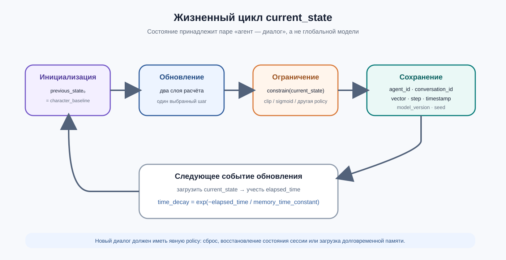
initial_state до следующего событияИнженерное решение: отдельно зафиксируйте инициализацию, гранулярность шага, функцию ограничения, формат хранения и политику восстановления после паузы.
13. Отсутствующие модальности и физическое время
Для каждого необязательного канала нужна маска доступности. Для аудио:
audio_contribution = audio_available × state_gain × audio_weight × (audio_emotions ⊙ previous_state)audio_available равен 0 или 1. При отсутствии аудио исчезает только акустическая модификация, а не эмоциональное состояние.
audio_contribution = 0; продолжить использовать text_emotions, response_emotions, character_baseline и память.text_emotions. Аудио не получает права создавать новый эмоциональный класс: оно по-прежнему ограничено previous_state.previous_state даёт нулевой акустический вклад в эту координату.character_baseline, нейтральный вектор, восстановление сессии или отдельную долговременную память.Простой вариант непрерывного затухания:
time_decay = exp(−elapsed_time / memory_time_constant)memory_time_constant задаёт характерное время сохранения следа. После применения затухания полученное состояние становится previous_state и контекстом для аудио нового события.
14. Инженерные ограничения модели
- Все векторы верхнего уровня должны использовать один
EMOTION_SPACE;proto_emotionsотдельно используетPROTO_EMOTION_SPACE. - В акустическом пространстве запрещены координаты положительной или отрицательной окраски и готовые смысловые эмоции.
audio_emotionsявляется потенциальным влиянием, а не распознанным состоянием собеседника.- Перед вторым слоем аудиовектор обязательно умножается на снимок
previous_state, сделанный до обновления. - Аудио не должно создавать ненулевую эмоциональную координату при нулевом контексте этой координаты.
- После каждого полного обновления нужна явная функция
constrain. - Отсутствующая модальность обнуляет только собственный вклад.
- Состояние принадлежит конкретным агенту и диалогу и не хранится глобально.
- Для воспроизводимых экспериментов фиксируются параметры, версия проекции и генератор случайных чисел.
Двухслойность и конкретные веса являются архитектурой данной модели. Их качество проверяется на целевых сценариях, но проверка не должна возвращать аудиоканалу запрещённую роль классификатора эмоций.
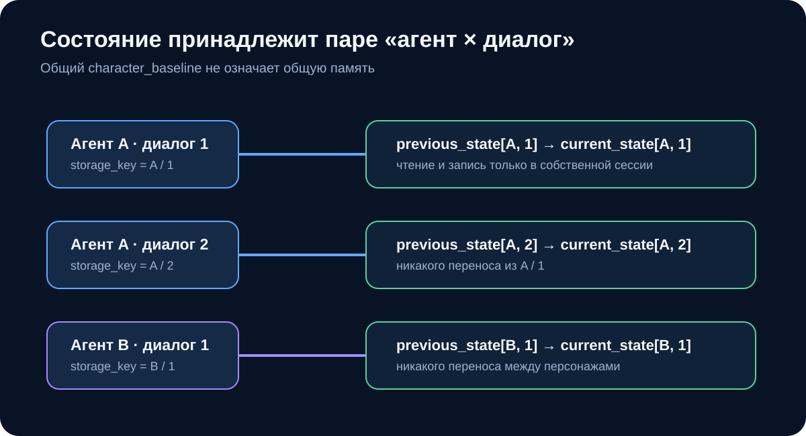
Каждая сессия читает и записывает только собственный previous_state; общий профиль характера не превращает состояния разных диалогов в общую память.
15. Минимальный набор тестов
Алгебраические свойства
external_weight = 0 соответствующий внешний сигнал не влияет на слой.previous_weight = 0 линейный перенос прошлого состояния отсутствует; отдельная контекстная роль previous_state в аудиоканале проверяется независимо.variability_range = 0 повторные вычисления полностью детерминированы.layer_gain = 0 результат слоя равен нулевому вектору.Контракт данных и динамика
[0,709; 0,730; 0,466] с учётом точности округления.PROTO_EMOTION_SPACE × EMOTION_SPACE; нулевой proto_emotions даёт нулевой audio_emotions.previous_state равна нулю, аудио не создаёт её независимо от значения audio_emotions.audio_emotions при разных previous_state даёт разные audio_contribution.proto_emotions при одной таблице даёт одинаковый потенциальный audio_emotions; различие фактического влияния возникает на этапе умножения на состояние.audio_emotions как эмоцию собеседника.abs(memory_retention) < 1, а при постоянных входах достигается расчётная стационарная область.16. Итоговая архитектура и границы ответственности
text_emotions + response_emotions + previous_state → первый слой → semantic_stateaudio → признаки → proto_emotions → audio_emotionsaudio_emotions ⊙ previous_state + character_baseline + semantic_state → второй слой → constrain → current_state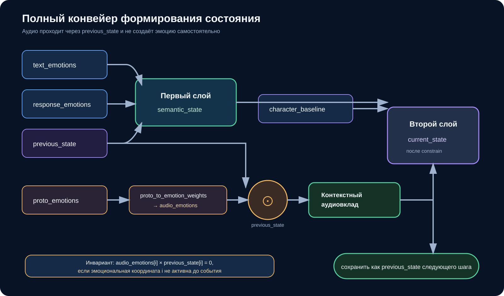
Текст формирует text_emotions. Акустика остаётся в пространстве прото-эмоций, а её потенциальное влияние применяется только через previous_state. Результат сохраняется как контекст следующего события.
Техническая глава заканчивается на вычислении, ограничении и сохранении current_state. Другие подсистемы могут читать этот вектор через отдельный интерфейс, но способы его внешнего выражения не являются частью модели формирования состояния.
Модель охватывает формирование, контекстную акустическую модификацию, ограничение и хранение эмоционального состояния. Выбор конкретных анализаторов, хранилища и потребителей состояния остаётся за реализацией системы.